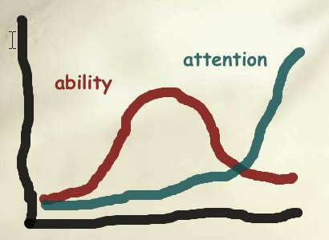

Good Enough Practices in Scientific Computing
April Wright recently wrote a blog post about the reproducibility of a paper she recently submitted. In it, she said:
A few people have pointed out recently that open science has kind of an image problem. And I fully agree. From reading Twitter about open science, you'd get the impression that if you don't use the latest tools and your pipeline isn't perfect, and you can't just type 'make' and have the full paper spit back at you from the command line, then you aren't doing it right… Not true, and that's a really alienating message.
The root of the problem, I think, is that while practitioners' ability is distributed on a bell curve, public attention is concentrated at the high end. As a result, even most above-average practitioners think that they're under-performing, which is pretty demoralizing:

I believe that the impostor gap between the actual distribution of people's knowledge and their (skewed) perception of that distribution discourages people who would benefit from our workshops from taking part. The fix, if we can ever find time to do it, would be to write a companion piece to our best practices paper called "Good Enough Practices in Scientific Computing". What we can do right now is tell learners the same thing April says in her post: "Your project doesn't need to be perfectly, fully reproducible to be useful." And as we do that, we need to remind ourselves that our goal isn't to produce expert programmers. It's to remove the barriers to taking part in the conversation about open science and reproducible research.
For more on this gap between reality and perception, see Jacob Kaplan-Moss's keynote from PyCon 2015.